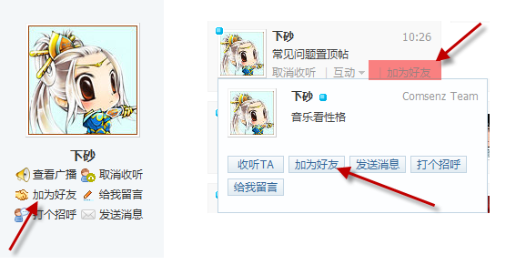
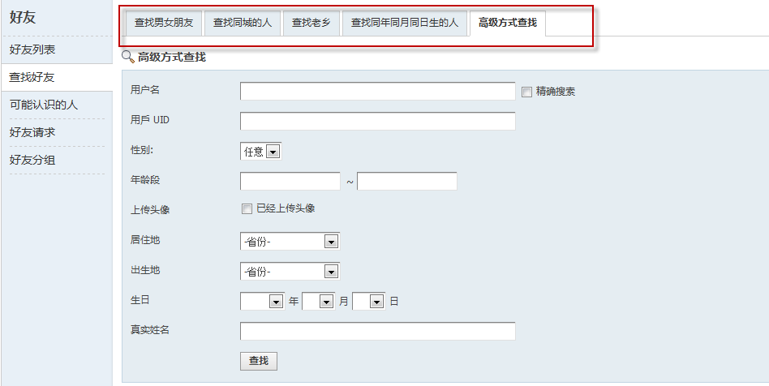
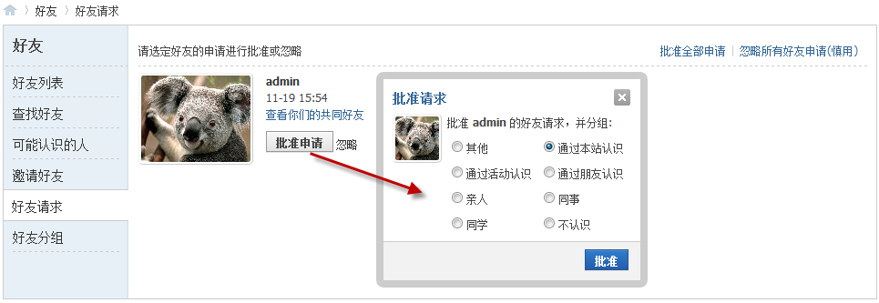
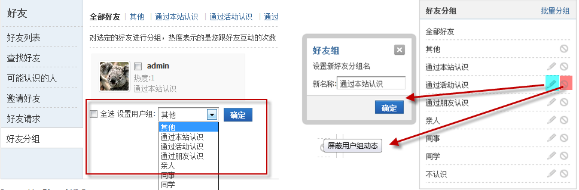
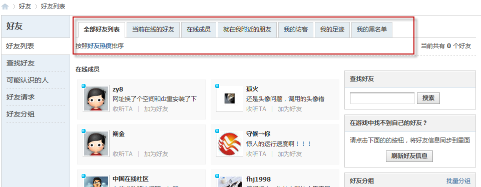
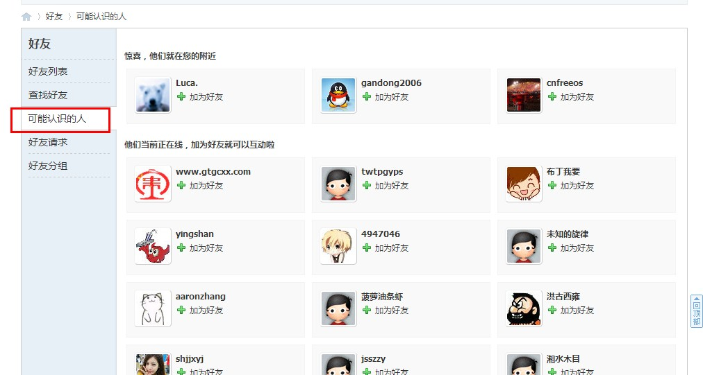
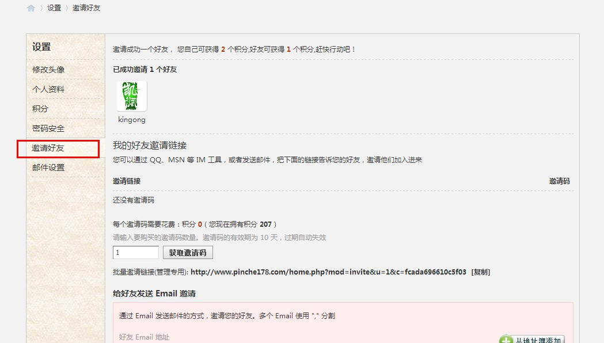

好友
好友是将社区中的用户联系起来进行社交拓展的重要元素，用户可以通过“查找好友”结交志趣相投的好友，“可能认识的人”又为您提供和周围用户巧遇的缘分。加为好友后，我们可以打招呼、踩日志、写评论、留言、发短消息等和好友互动。
一、加为好友
用户可以在个人空间、动态页面等地的好友名片添加用户为好友：
或是通过“查找好友”搜索出符合条件的用户加为好友：
二、好友请求
当有用户请求加您为好友时，系统将会发送提醒，进入好友请求页面，可以查看共同好友或是查看用户资料，来确定是否批准其成为好友。点击批准请求：
选择此好友所属的组别，确定后，就成为了好友。
三、好友分组
系统提供了好友分组功能，来方便用户对好友的管理：
好友分组：可以将好友分别放入不同组，系统提供批量处理
分组编辑：系统提供8个分组，用户可以自己通过编辑来命名分组。
屏蔽动态： 可以屏蔽好友组的用户动态
四、好友列表
系统在“好友列表”，提供了全部好友列表、在线成员、就在我附近的朋友、我的访客和我的足迹，方便用户分类查看好友。同时系统还提供黑名单功能，防止被不良用户打扰 。
五、可能认识的人
系统会推荐一些在您附近的人或是当前在线的人，可以添加其为好友
六、邀请好友
当系统开启了邀请注册时，用户可以获取邀请码，将邀请码通过QQ、MSN 等 IM 工具，或者发送邮件，邀请好友加入进来，邀请成功一个好友，将会获得相应的积分